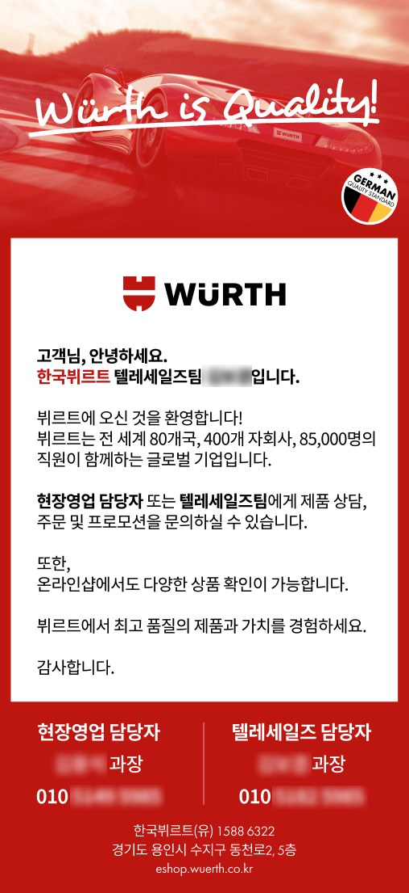
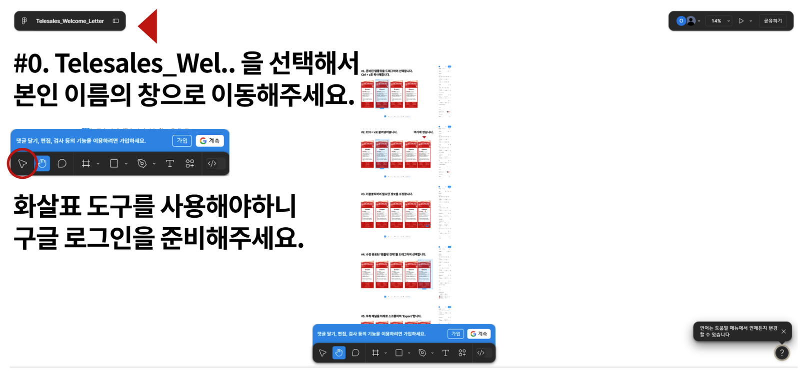

이름과 전화번호만 열어 두었다
텔레세일즈 부서는 고객을 직접 만나지 않는다. 전화와 메시지로만 고객과 이어지니, 담당자를 기억에 남길 온라인 명함 같은 안내물이 다른 부서보다 더 필요했다. 그래서 회사 아이덴티티에 맞춰 눈에 띄는 디지털 안내물을 만들어 주었다.
다만 그 종류가 많았다.
30가지 조합
한국뷔르트는 권역별로 영업 담당자를 배정한다. 고객은 원격 상담과 방문 영업 가운데 원하는 쪽을 고를 수 있고, 그래서 현장 방문 담당자마다 텔레세일즈 담당자가 짝지어진다. 이 조합을 하나씩 맞추다 보니 안내물이 30종쯤 됐다.
바뀌는 건 담당자의 이름과 전화번호뿐이라 만드는 일 자체는 간단했다. 어려운 건 검수였다. 서른 장 가까운 이미지에서 전화번호가 하나라도 틀리지 않았는지 확인해야 했는데, 나에게는 대부분 낯선 번호였다. 가이스트리히코리아에서 영업 담당자들의 명함을 그래픽 디자인 툴로 직접 만들 때 이미 겪어 본 일이다. 규칙 없는 숫자 몇십 개를 하나하나 대조하는 일은 무척 소모적이었고, 그 숫자에 익숙하지 않은 사람이 만들면 검수자를 따로 한 번 더 거쳐야 했다. 게다가 현장 사정으로 담당자 짝이 바뀌면 안내물을 다시 만들고, 검수도 처음부터 다시 해야 했다.
쓰이지 않은 첫 템플릿
이 부서를 위해 템플릿을 만든 건 이번이 두 번째였다. 원격으로 영업하는 부서라 디지털 이미지 홍보물에 기대는 일이 많았고, 그때마다 나에게 제작을 요청하는 일이 양쪽 모두 번거로웠다. 그래서 입사 초기에 MS 파워포인트로 간단한 안내물을 직접 만들 수 있는 템플릿을 만들었다. 미리 합의하고 사용법도 설명했지만, 실제로 쓰인 적은 한 번도 없었다.
돌아보면 자유도가 너무 높았던 것 같다. 고칠 수 있는 곳이 많으니 어디부터 손대야 할지 막막했을 것이다. 다시 생각해 보니 기준도 하나 더 있었다. 규모가 작은 안내물이라도 B2B 고객에게 건네는 시각물이라면 브랜드의 품위는 지켜야 한다고 생각했다.
피그마로 다시
그래서 이번에는 피그마를 골랐다. 영업부서에는 낯선 도구지만, 시각 품질은 높게 유지하면서 쓰는 방법은 단순하게 만들 수 있다고 봤다. 다행히 텔레세일즈는 사무실에서 일하는 부서라 구성원들이 사무 도구를 꽤 능숙하게 다뤘다. 처음 보는 피그마를 큰 거부감 없이 받아들인 데는 이 덕도 있었을 것이다.
파일을 열면 맨 앞에 사용 설명서가 있다. 다섯 단계로 나눠 적고, 그 앞 0단계에는 선택 도구를 쓰려면 구글 로그인이 필요하다는 안내부터 넣었다. 다른 요소는 모두 잠가 두고, 이름과 전화번호 오브젝트만 수정할 수 있게 열어 두었다. 텔레세일즈 팀이 쓰는 기능은 복제, 수정, 내보내기 세 가지가 전부다. 이 세 가지도 모두 화면을 캡처해 설명서에 붙여 두었다. 페이지는 담당자별로 따로 만들어서, 자기 이름이 적힌 페이지만 확인하면 되게 했다.


이렇게 넘기고 나니 검수도 각자의 몫이 됐다. 담당자는 자기 번호와 평소 함께 일하는 영업 담당자의 번호만 확인하면 된다. 늘 보던 번호라 확인도 수월하다. 서른 장 가까운 이미지에서 낯선 번호를 대조하던 내 몫의 단계는 빠졌다.
매번 제작을 부탁하며 미안해하던 텔레세일즈 팀도 오히려 반겼다. 브랜드 위상을 해치지 않는 선에서 간단한 수정은 직접 하는 편이 서로 편했기 때문이다. 고를 것과 고칠 곳을 줄인 것이 심리적인 부담까지 덜어 준 것 같다. 따로 설명회를 열지 않았고, 적어 둔 사용법만으로 지금까지 굴러가고 있다.
규모에 맞춘 설계
처음부터 지금 한국뷔르트 규모에 맞춰 설계했다. 직원이 몇백 명이라면 데이터를 넣으면 안내물이 나오는 자동화 시스템이 필요하겠지만, 담당자가 몇 명인 지금은 그런 시스템을 만드는 것보다 담당자 곁에서 직접 도와주는 편이 더 빠르고 생산성도 높다고 판단했다. 내가 알기로는 쓰는 기능도 모두 피그마 무료 범위 안에 있다.
늘어난 담당자
텔레세일즈 담당자는 피그마 템플릿을 처음 건넸을 때보다 두 배가량 늘었다. 그사이 안내물은 42종으로 늘었다. 담당자가 늘어도 안내물은 지금도 각자 직접 만들고, 새 담당자용 페이지를 복제하는 일도 팀 안에서 한다. 설계를 단순하게 하고 설명서를 붙여 둔 덕분인지, 따로 유지보수 요청은 아직 들어오지 않았다.
손을 완전히 뗀 건 아니다. 한 달에 한 번쯤 파일에 들어가 레이어를 정리하고, 큰 오류가 생기지 않았는지 확인한다.